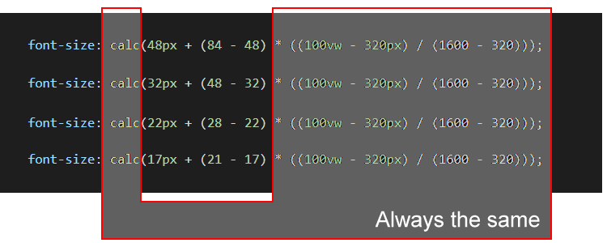

Learning Goals
At the end of this Tutorial, you will be able to:
- Understand the concept of fluid typography in web design.
- Recognise that, for fluid typography to work, you must choose a minimum and a maximum viewport (screen) width.
- Apply Mike Riethmuller’s fluid typography equation to the CSS styles that control the headings, paragraphs and other text elements in a web page.
- Understand that the smallest and largest font sizes are the only two values you need to change in the typographic equation.
You can view finished versions of the three sample web pages you will update with fluid typography in this Tutorial by clicking the links below. The finished samples will each open in a new tab of your web browser.


You last updated these web pages and their linked stylesheets in the Working with Google Fonts Tutorial.
About fluid typography
Fluid typography means that the font sizes of text – headings, paragraphs, bulleted lists, menu items – on a web page ‘scale’ (shrink or expand) smoothly according to the width of the user’s device viewport.
Here are some examples of web pages that did not use fluid typography to scale font sizes correctly for mobile phone screens.

The animated gif below is taken from an article on the CSS Tricks website that features the widely-used implementation of the fluid typography approach developed by Australian web designer Mike Riethmuller.

Minimum (320px) and maximum (1600px) viewport widths
To use fluid typography in your web pages, you need to decide on two values:
- Smallest web page width: A common choice is 320px, the width of the viewport of the most widely-used small mobile phone, the Apple iPhone 5.
- Largest web page width: A common choice is 1600px, which is about 84% of the width (1920px) of popular desktop screens.
You will use both the 320px and 1600px values in the so-called fluid typography equation when setting fluid values for the font-size style rule in your stylesheets.
The fluid typography equation
At first sight, Mike Riethmulleṟ fluid typography equation looks complex. But it becomes easy to work with if you remember the following two points:
- Except for two values, the equation is always the same.
- The only two values you ever need to change are the smallest and largest font size values.
For example, in the case of paragraph text, you might:
- Set a font-size value of 16px for the smallest mobile screen, and
- Set a font-size value of 20px for the largest laptop/desktop screen.
Your fluid typography equation for text paragraphs would then be as shown below.

As for the other values in the equation:
- 100vw: The letters vw stand for viewport, and 100 means 100% wide.
- 320: This is the width in pixels you have chosen for the narrowest viewport.
- 1600: This is the width in pixels you have chosen for the widest viewport.
As you can see from the four examples of fluid font sizes below, you only ever need to change the smallest and largest font size values.
In the remainder of this Tutorial, you will update with fluid values the font-size properties in the stylesheet files for the page-5.html, page-6.html and index.html web pages you created and worked on previously.
Updating your van Gogh page stylesheet
Follow these steps to add fluid font-size values to the stylesheet for the sample van Gogh web page you last updated in the Working with Google Fonts Tutorial.
- In VS Code, open the style-5.css stylesheet file.
- For the h1 main heading selector, you can see that the current font-size property is set to a fixed value of 84px.
Update this to a fluid value by replacing it with the following:
font-size: calc(48px + (84 - 48) * ((100vw - 320px) / (1600 - 320)));
- For the h2 sub-heading selector used to style the introduction text, update the font-size property from the fixed value of 24px by copying-and-pasting this fluid value:
font-size: calc(18px + (26 - 18) * ((100vw - 320px) / (1600 - 320)));
- For the h3 sub-heading selector, update the font-size property from the fixed value of 42px by copying-and-pasting this fluid value:
font-size: calc(32px + (38 - 32) * ((100vw - 320px) / (1600 - 320)));
- And for the text paragraphs styled with the p selector, update the font-size property from the fixed value of 20px by copying-and-pasting this fluid value:
font-size: calc(16px + (21 - 16) * ((100vw - 320px) / (1600 - 320)));
- Save the style-5.css stylesheet and view your page-5.html page in your web browser. Use your browser’s viewport resizing feature to check the font sizes display correctly down to a minimum viewport width of 320 pixels.
Click page-5.html to view a finished sample of this web page in a new tab of your web browser.
Updating your Tourism page stylesheet
Follow these steps to add fluid font-size values to the stylesheet for the sample Tourism web page you last updated in the Working with Google Fonts Tutorial.
- In VS Code, open the style-6.css stylesheet file.
- For the h1 main heading selector, update the font-size property from the fixed value of 72px by copying-and-pasting this fluid value:
font-size: calc(38px + (64 - 38) * ((100vw - 320px) / (1600 - 320)));
- For the h2 sub-heading selector, update the font-size property from the fixed value of 42px by copying-and-pasting this fluid value:
font-size: calc(28px + (54 - 28) * ((100vw - 320px) / (1600 - 320)));
- And for the text paragraphs styled with the p selector, update the font-size property from the fixed value of 22px by copying-and-pasting this fluid value:
font-size: calc(17px + (22 - 17) * ((100vw - 320px) / (1600 - 320)));
- Save the style-6.css stylesheet and view your page-6.html page in your web browser. Use your browser’s viewport resizing feature to check the font sizes display correctly down to a minimum viewport width of 320 pixels.
Click page-6.html to view a finished sample of this web page in a new tab of your web browser.
Uploading your files to GitHub
After finishing your web pages and stylesheets, you are now ready to upload them to your account on GitHub.
- Open a new tab in your web browser and go to GitHub.com. If you are not already signed in to your GitHub account, sign in now.

- On your GitHub home page, click the ‘repo’ that holds your web pages. Its name will look as follows, where username is your chosen username on GitHub.
username.github.io

- On the next GitHub screen displayed, near the right of the screen, you can see a button named Add file. Click on it.

- From the dropdown list displayed, choose the option Upload files.

- In File Explorer (Windows 10) or Finder (Apple Mac), drag-and-drop your index.html file and your 📁 assets and 📁 exercises sub-folders to upload them to your repository on GitHub.

- Scroll down to the bottom of the GitHub screen, and accept or edit the short message (Add files via upload) in the Commit changes box.
- Finally, click the green Commit changes button to upload your files.

Your updated home page and four sample pages are now published on GitHub at web addresses similar to the following:
https://username.github.io/index.html
https://username.github.io/exercises/page-5.html
https://username.github.io/exercises/page-6.html
It may take a few minutes for your uploaded files to appear on GitHub.